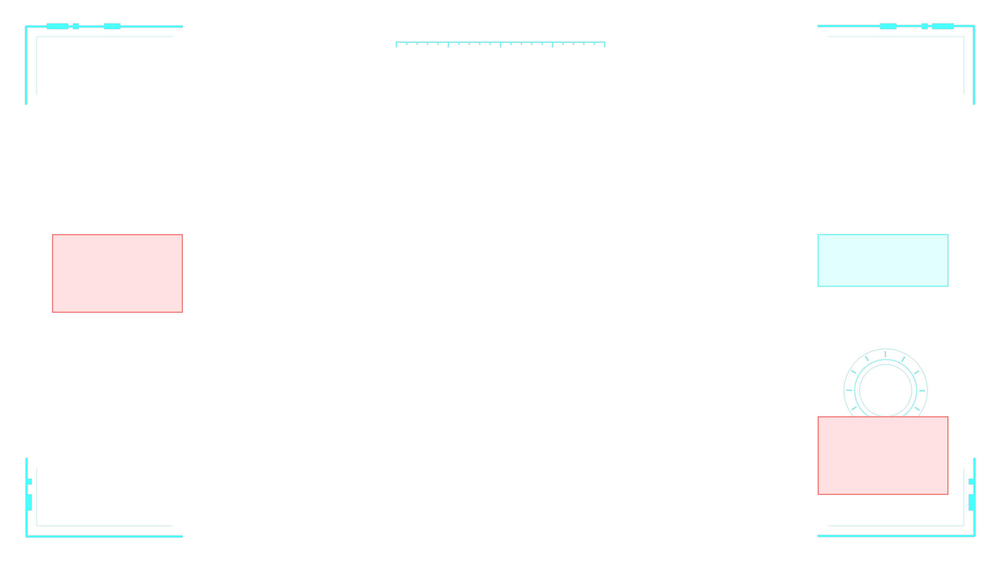

САНДЕВИСТАН
Военный киберимплант хребта.
Пять секунд ускорения. Цветной след.
Нагрузка, которая не уходит сама.

SANDEVISTAN OS
Замирают сущности, а не часы мира. Другой игрок с уже активным Сандевистаном сохраняет движение.

Нейральная нагрузка
Каждый активный тик добавляет 0,2 пункта. Отдых не уменьшает психоз. Критическая фаза фиксируется при достижении 100.
Предел не отменяется уколом
Препарат, введённый заранее, ставит снижение в очередь: до одного пункта за тик. Когда киберпсихоз уже запущен, новая доза не останавливает его — даже если прежняя очередь ещё уменьшает показатель.
Обычный субъект с 20 HP может погибнуть раньше десяти секунд. Отдельный Адам Смэшер не появляется: это текст достижения, а не новый моб.
Пять минут по счётчику, который сбрасывается при активации импланта, а не при инъекции.
Иммуносупрессант
Обычное зелье Регенерации II и Око Энда. Не взрывное, не туманное, не Регенерация I.
 РЕГЕНЕРАЦИЯ II
РЕГЕНЕРАЦИЯ II ОКО ЭНДА
ОКО ЭНДА ИММУНОСУПРЕССАНТ
ИММУНОСУПРЕССАНТТри флакона в стойке дают три дозы за один ингредиент.
При эффективности 95% следующая доза ставит в очередь снижение на 47,5 пункта. Пока работает ускорение, начинать инъекцию нельзя.
Активация во время уже начатого укола
Ускорение сокращает использование предмета до одного тика, но проверка в конце инъекции не применяет препарат во время ускорения. Доза всё равно расходуется.
Проклятия и снятие импланта
При обычном получении добавляются Проклятие несъёмности и Проклятие утраты. Проверка выполняется в тике предмета, если на нём ещё нет Несъёмности. В критическом финале имплант удаляется.
Скорость ударов и восстановление цели
Ускорение сбрасывает кадры неуязвимости и анимацию боли цели. Собственный откат оружия при этом не удаляется. Стенд использует безоружный удар без брони и зачарований манекена.
Достижения
6 родных достижений · 150 XP
Названия и описания ниже — цитаты из исходного мода, включая его грубую лексику. Условия проверяются отдельно и не заменяются текстами подсказок.